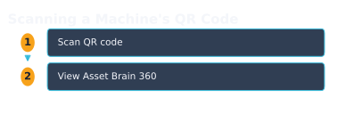
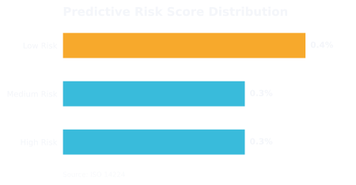

WorkHive Learn · Philippines
Asset Brain 360: Every Machine's Full History in One QR Scan
Who this is for
- Field technicians responsible for performing routine maintenance and repairs
- Supervisors overseeing maintenance teams and ensuring plant operations run smoothly
- Reliability engineers tasked with analyzing equipment performance and implementing improvements
- Plant managers responsible for overall plant performance and productivity
- OFW-track engineers who need to access equipment history and performance data remotely
- Maintenance planners coordinating work orders and resource allocation
What's in this guide
Introduction to Asset Brain 360
Asset Brain 360 is a powerful feature in WorkHive's Asset Hub, designed to provide a comprehensive history of every machine in your plant. By simply scanning a QR or barcode on a machine, you can access its full timeline, including logbook entries, preventive maintenance history, inventory and parts movements, and project work. This centralized view enables you to decide with evidence about machine maintenance and repair.
For example, consider a pump in a bottling line at a plant in Cabuyao, Calabarzon. With Asset Brain 360, you can scan the QR code on pump P-204B and instantly view its entire history, including any downtime in PHP. The asset's parent and sister-machine relationships are also clearly displayed, as well as a list of parts that fit this asset. This information is grounded in the ISO 14224 asset hierarchy and failure coding standards.
Asset Brain 360 also offers advanced features such as AI-powered Q&A, live asset state, and predictive risk scores. The Risk Ranking and Health Heatmap provide a visual representation of the asset's condition, allowing you to prioritize maintenance and repair efforts. With Asset Hub, you can start building your asset brain with a simple, zero-budget approach: label machines with printed QR codes, start logging, and let the brain assemble the history.
Scanning a Machine's QR Code
As a plant supervisor in a Philippine facility, you're likely familiar with the challenges of tracking machine history. With Asset Hub's Asset Brain 360, you can access a machine's full history in one QR scan. This feature is part of WorkHive's Asset Hub, a tool designed to help you manage your assets efficiently.
To scan a machine's QR code, simply navigate to the Asset Hub page and click the Scan button. This will open your device's camera, allowing you to scan the QR code label on the machine. Make sure the QR code is printed and affixed to the machine, and that your device has a stable internet connection.
- Navigate to the Asset Hub page in WorkHive.
- Click the Scan button to open your device's camera.
- Scan the QR code label on the machine, such as one for a Cabuyao bottling-line pump P-204B.
- The Asset Brain 360 page will load, displaying the machine's full history, including logbook entries, PM history, inventory and parts movements, and project work.

The Full Per-Asset Timeline
Asset Brain 360 in WorkHive Asset Hub brings together a machine's entire history in one easily accessible timeline. After scanning a QR code on a machine, technicians can view logbook entries, PM history, inventory and parts movements, and project work all in one chronological record. This comprehensive view allows for a deeper understanding of the asset's performance over time.
The timeline in Asset Hub includes parent and sister-machine relationships, 'parts that fit this asset', and per-asset AI Q&A grounded only in that machine's own history. The live asset state and per-asset predictive risk score (Risk Ranking / Health Heatmap) are also available, providing valuable insights into the asset's current condition and potential risks. These features are all anchored to the ISO 14224 asset hierarchy and failure coding, ensuring a standardized and reliable approach.
Machine Relationships and Parts Information
In Asset Hub, when you scan a machine's QR code, Asset Brain 360 opens, showing not just the asset's timeline but also its relationships with other machines. For example, consider Pump P-204B in a Cabuyao bottling line. Its Asset Brain 360 page will list parent and sister machines, helping technicians understand the equipment hierarchy.
The 'parts that fit this asset' section on the Asset Brain 360 page lists compatible components for a specific machine. This feature helps maintenance teams quickly identify suitable spare parts, reducing inventory management errors. In Asset Hub, this information is easily accessible, making it simpler to plan and execute maintenance tasks.
By understanding machine relationships and parts information in Asset Brain 360, technicians and engineers can make more informed decisions. This feature, available in Asset Hub, supports more efficient maintenance and repair processes, ultimately contributing to increased equipment reliability and reduced downtime.
Predictive Risk Score and Health Heatmap
In Asset Brain 360, the predictive risk score and Health Heatmap provide early warnings of potential equipment failures. For example, a pump like P-204B in a Cabuyao bottling plant can be assessed for its risk level. This score is calculated based on the asset's maintenance history, operating conditions, and other factors, all of which are tracked in Asset Hub.
The Health Heatmap, now integrated into Asset Hub, visualizes the risk level of each asset, giving technicians and engineers a quick overview of the asset's health. This feature helps prioritize maintenance tasks and reduce downtime. By scanning the QR code on P-204B, maintenance teams can access its Asset Brain 360 and view its predictive risk score and Health Heatmap, enabling informed decisions.
| Risk Level | Description |
|---|---|
| High | Immediate attention required to prevent failure |
| Medium | Monitor asset closely, schedule maintenance |
| Low | Asset operating within normal parameters |

Worked Example: Cabuyao Bottling-Line Pump P-204B
Let's consider a real-life example of using Asset Brain 360 in WorkHive Asset Hub. A plant supervisor in Cabuyao, Calabarzon, wants to check the history of a bottling-line pump, P-204B. After scanning the QR code on the pump, the supervisor opens the Asset Brain 360 page in Asset Hub.
The page shows a full timeline of the pump's history, including logbook entries, preventive maintenance records, inventory and parts movements, and project work. The supervisor can see 'parts that fit this asset' and relationships with parent and sister machines. They can even ask the AI questions about the pump's history.
The Asset Brain 360 page also shows the live asset state and predictive risk score, also known as the Risk Ranking or Health Heatmap, which helps the reliability engineer prioritize maintenance tasks. This feature is now integrated into Asset Hub, providing a comprehensive view of the asset's health.
Open the tool: Asset Hub is the WorkHive surface this guide funnels into. It is free at the worker tier, works offline, and is built for Philippine plants.
Open Asset Hub →Frequently asked questions
What is Asset Brain 360?
How do I access Asset Brain 360?
What kind of information is available in Asset Brain 360?
Can I use Asset Brain 360 for machines that are not in our current asset register?
Is Asset Brain 360 available for all types of machines?
Can I customize the information displayed in Asset Brain 360?
Sources
- ISO 14224:2016 - Petroleum, petrochemical and natural gas industries - Reliability, availability and maintainability (RAM) data exchange
- SMRP CMRP Body of Knowledge
- DOLE OSHS - Occupational Safety and Health Standards
- Related WorkHive guides: Building an asset register from scratch · Predictive maintenance on a budget · FMEA worked example